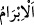

verdiği şahıs böyle değildir. Durum tam aksinedir. Yani kabre defn edilmiş olan insan,
görünüşte her ne kadar ölü ise de, fakat hakîkatte canlılar zümresindendir. Çünkü kâmil
müminler ölmezler. Bilakis bir diyardan başka bir diyâra göç ederler. Bu insan kalp
cennetinde bekleyip vuslat nimetiyle nimetlendirilecektir. Amelleri ve halleriyle kendisi
faydalanmaktadır. Bu insanın şefâat ve benzeri şeylerle başkalarına da faydası olacaktır.
Nâziât sûresi 5. âyetindeki “derken işi düzenleyenlere” ifâdesi buna işâret etmektedir.
Öldüklerinde gönül ehlinden umut kesme,
Çünkü gönül ehlinin uykusu da uyanıklıktır.
Sen şimdi kabirde ölüye telkin yapan kişinin hâlini gördün, anladın. Artık diğer bir
takım riyâkâr, asılsız iddiâ sâhiplerinin ne derece liyâkatsiz ve ehliyetsiz olduklarını
buna kıyas et. Zîrâ ölü, diriltilmesi için kendisine hakiki bir ruhun üfürülmesine
muhtaçtır. Esâsen ölüler hükmünde olan bu üfleyici/telkinci kimse hakkında bu, nereden
ve nasıl gerçekleşecektir? Çünkü bu kişinin üflemesi kısır olup kendisi de, ikinci
doğumu yaşayanlardan değildir.
Allah Teâlâ’dan bizleri ilim, mârifet ve müşâhedeyle hayat bulan kullarından
kılmasını; bizleri cehâlet, gaflet ve bir takım nefsî bağlardan korumasını dileriz.
79. Yoksa (müşrikler) bir işe kesin karar mı verdiler? Doğrusu biz de kararlıyız!
“Yoksa (müşrikler)” Mekke müşrikleri Rasûlullah (s.a.)’e hîle düşünüp tuzak kurarak
“bir işe kesin karar mı verdiler? Doğrusu biz de kararlıyız.” Sonuçta onların planları
suya düşecek, biz onların kurdukları tuzakları başlarına geçireceğiz.
“/ibrâm” işi sağlam yapmak demektir. Bunun aslı “ipi sağlamlaştırmak” olup, ipin
bükümünü tekrar tekrar yapıp onu sağlam hâle getirmek demektir.
Bu bir başlangıç sözüdür. “ /em” edât-ı munkatıa olup cehennem ehlini azarlamaktan
bedbaht insanların işledikleri cinâyetin beyânına intikal içindir. Hemze ise inkâr içindir.
Şâyet burada “ibrâm”dan gerçek ihkâm mânâsı murâd edilirse, o zaman bu hemze, böyle
bir şeyin vukunu inkâr edip böyle bir şeyin oluşumunu uzak tutmak içindir. Şâyet
“ibrâm”dan görünüşte bir sağlamlık murâd edilirse bu sefer hemze, olan bir şeye karşı
tepki mânâsı ifâde edip böyle bir hâdisenin vukuunu çirkin görmektir. Yani Mekke
müşrikleri, Peygamberimiz (s.a.)’e hîle, tuzak ve entrika yapmak husûsunda gûyâ sağlam
bir karar alıp böyle bir iş mi yaptılar? demektir. Doğrusu biz de kararlıyız. Gerçekte
sağlam karar alıp sağlam işi biz yaparız. Onlar yapamaz. Yahut biz onlar hakkında
sağlam ve gerçek bir karar almışızdır. Onlar ise görünüşte bir hîle ve tuzak kararı
almıştır. Bu husûsa ışık tutacak mâhiyette: “Yoksa onlar bir tuzak mı kurmak